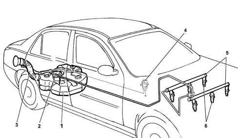

Specifications
- Path
- Descriptions > 10 ENGINE > 1040 FUEL TANK AND PIPES > Specifications
- Kind
- system description
- Applies to
- engines: 3.0 V6, 3.2 V6; all production periods
- Interactive page
- https://sloeber94.github.io/elrnDB-lThss/en/#/612185
Applies to: engines: 3.0 V6, 3.2 V6; all production periods
SYSTEM DETAILS
Devices adopted
The fluid feed system is returnless, i.e. a single pipe delivers fuel from the fuel pump submerged in the tank to the engine.
This:
- minimises the possibility of the vehicle catching fire in case of an accident.
- reduces fuel vapour emissions to the atmosphere.
The fuel tank is located in front of the rear axle. It is made out of plastic with high mechanical strength.
The fuel pump is enclosed in the cradle that also incorporates:
- a fuel pressure regulator.
- a fuel level gauge.
- a fuel filter.
The system is equiped with an inertia switch that cuts off the fuel supply from the fuel pump if the vehicle crashes.
FUEL SUPPLY SYSTEM
The figure shows the fuel feed system.

- 1 - Fuel tank
- 2 - Submerged fuel assembly complete with level gauge control
- 3 - Fuel filler pipe
- 4 - Inertia switch.
- 5 - Fuel manifold
- 6 - Injectors [DF1056].